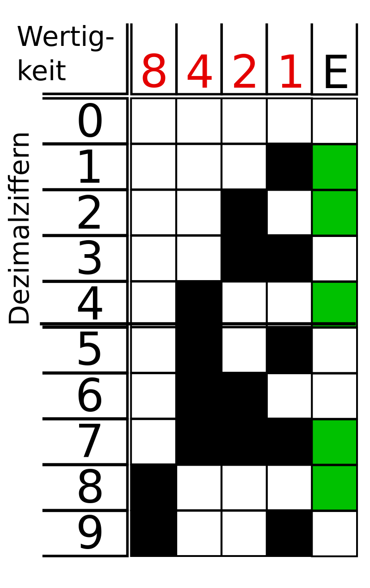
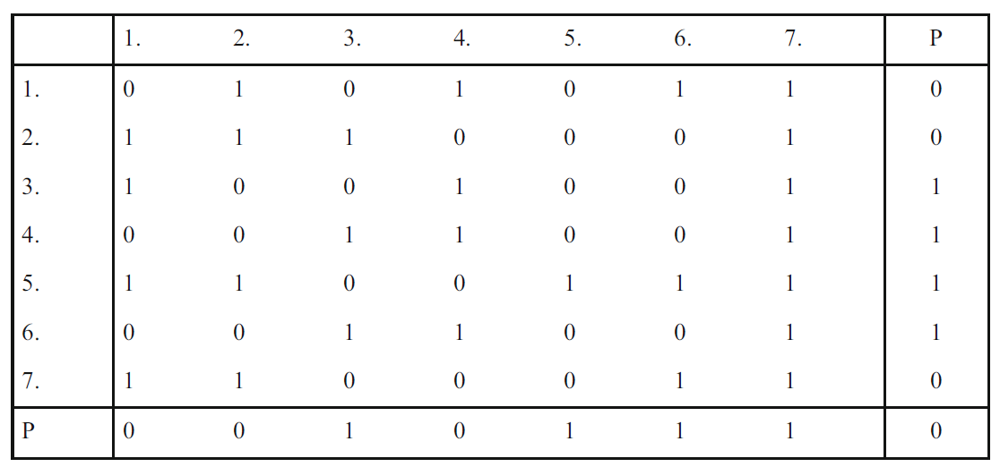

3 Übertragungssicherheit
🎯 Lernziele
Nach dieser Einheit sind Sie in der Lage dazu * verschiedene Fehlertypen bei der Datenübertragung unterscheiden * Maßnahmen zur Erkennung und Behebung von Übertragungsfehlern beschreiben * die Hammingdistanz verschiedener Codes ermitteln
🧠 Informationsgehalt von Telegrammen

- Steuerfeld: Priorität der Nachricht
- Quelladresse: Absender (vgl. MAC-Adresse)
- Zieladresse: Empfänger (vgl. MAC-Adresse)
- Routing Zähler: Zählt wie oft über Koppler gesendet
- Nutzinformation: Eigentlich Information (z.B. Messwerte eines Sensor)
- Sicherungs-Feld: Wurden die Daten richtig übertragen (vgl. Hash)
🧠 Datensicherung
Gesendet: 010000010000001110000000
Empfangen 1: 010000110000001110000000
Empfangen 2: 01000010000001110000000
🧠 Fehlerarten
- Wir betrachten im Folgenden stets transparente (bitorientierte) Codes. (d.h. jede Bitkombination ist erlaubt und sinnvoll)
- Bitfolge allein lässt nicht auf einen eventuellen Fehler schließen
- Es gibt drei Arten von Fehlern

🧠 Fehlermaße
- Bitfehlerrate \(p\) \(p = \frac{Anzahl \ der \ fehlerhaften \ Bits}{Gesamtzahl \ der \ gesendeten \ Bits}\)
- Der ungünstigste Wert \(p = 0.5\). Jedes zweite Bit ist dann im Mittel gestört, die Nachricht also wertlos
- wäre \(p=1\):
001:110- realistischer Wert \(p = 10^{-4}\)
🧠 Erkennen von Übertragungsfehlern
- Ob Fehler erkennbar sind, hängt auch davon ab, wie die Information codiert wurde
- Code: Deutsche Sprache
- Fehler ist offensichtlich:
Mein,Tein - Fehler ist nicht erkennbar:
Mein,Dein - Fehler ist erkennbar und korrigierbar:
Gxbäude,Gebäude
🧠 Erkennen von Übertragungsfehlern
- Codes können so definiert, werden, dass das Auftreten einzelner Übertragungsfehler offensichtlich wird.
00: Schalter ein01: nicht definiert10: nicht definiert11: Schalter aus- Die Schalterstellung kann nicht verwechselt werden (bei einem Ein-Bit-Fehler)
🧠 Hamming-Abstand
- Unter dem Hamming-Abstand eines Codes versteht man das Minimum aller Abstände zwischen verschiedenen Wörtern innerhalb des Codes
- Abstand: An wie vielen Stellen muss ein Wort verändert werden
- \(H(\{ 00,11\})=2\)
- \(H(\{ 00,01,10,11\})=1\)
- \(H(\{ 00110,00100\})=1\)
- \(H(\{ '12345','13349'\})=2\)
- \(H(\{ 'Haus','Baum', 'Tier'\})=2\)
Beachte: bei den Strings zählt nicht, wie weit die Buchstaben auseinander liegen
🧠 Anwendung des Hamming-Abstand zur Fehlererkennung
- Ein Code besteht aus folgenden drei Wörtern:
aus,ein,sie- Der kleinste der drei Abstände ist 2, also ist der Hamming-Abstand des Codes ebenfalls gleich \(h=2\) (
ein,sie). - Bei Codes mit Hamming-Abstand
h=2können alle1-Bit-Fehler erkannt werden. D.h. der veränderte Code kann mit keinem anderen Wort verwechselt werden (_ie,s_e,si_) - Ein
2-Bit-Fehler kann nicht immer erkannt werden (ein,_i_,sie)
🧠 Anwendungsbeispiel
- Drehschalter vier Einstellmöglichkeiten
- werden als binäre Zahl (Codewort) an einen Empfänger übermittelt:
00,01,10,11- Empfänger erhält das Codewort, hat sonst keine Möglichkeit, die Schalterstellung zu überprüfen
https://at.rs-online.com/web/p/nockenschalter/2212822
🧠 Anwendungsbeispiel und Aufgabe
00,01,10,11- Hamming-Abstand zwischen den vier Worten ist jeweils 1,
- d. h. falls durch einen Fehler nur ein Bit umgekehrt wird, erhält der Empfänger zwar ein anderes, aber ebenso gültiges Codewort
- ✍️ Aufgabe
- Angenommen es treten nur Einfachfehler auf (es wird also maximal ein Bit geflippt)
- Kann man einen binären Code entwickeln, der es nicht nur ermöglicht Fehler zu erkennen, sondern diese auch zu beheben?
🧠 Lösung
- Um Einfachfehler zu korrigieren benötigt man einen Code, der einen Hamming-Abstand ≥ 3 hat:
- z. B.
11000000,00110000,00001100,00000011. - Einfachfehler können nur erkannt und behoben werden:
10000000-->1100000011100000-->1100000010110000-->00110000
Hamming-Distanz bei Bus-Systemen
- \(h\) Maß für die Störfestigkeit eines Codes
-
Bei Feldbus-Systemen ist \(h = 4\) üblich, für sehr hohe Sicherheitsbedürfnisse \(h = 6\).
-
Damit nimmt die jedoch Telegrammübertragungseffizienz ab. Es müssen die eigentlich Informationen (z.b. 4 Werte eines Schalters) durch längere Bitfolgen codiert werden.
🧠 Paritätsbit zur Fehlererkennung
- Wir senden eine Zahl mit 4 Bit, z. B.
0010(\(2_{10}\)) - Zahl der positiven Bits im Binärcode ist ungerade
-
Paritätsbit
E=1(even = True) wird hinzugefügt (Paritäts-/ Evenbit ist 1, wenn einegerade Zahl von Bit übertagen werden) und mit übertragen -
Alle ungeraden Anzahlen an Fehlern werden erkannt:
- Original:
0010-E=1- erwartetE=1 - 1 Fehler:
0011-E=1- erwartetE=0 - 1 Fehler:
0010-E=0- erwartetE=1 - 1 Fehler:
0110-E=1- erwartetE=1

🧠 Blocksicherung
- Anstelle nur nach allen X-Bits eine Paritätsbit einzufügen wird auch ein spaltenweises Paritätsbit eingefügt
- Vorsicht: Hier wird \(P\) selbst nicht mitgezählt

Gerhard Schnell & Bernhard Wiedemann


🎯 Lernfortschritt
Nach dieser Einheit sind Sie in der Lage dazu * verschiedene Fehlertypen bei der Datenübertragung unterscheiden * Maßnahmen zur Erkennung und Behebung von Übertragungsfehlern beschreiben * die Hammingdistanz verschiedener Codes ermitteln